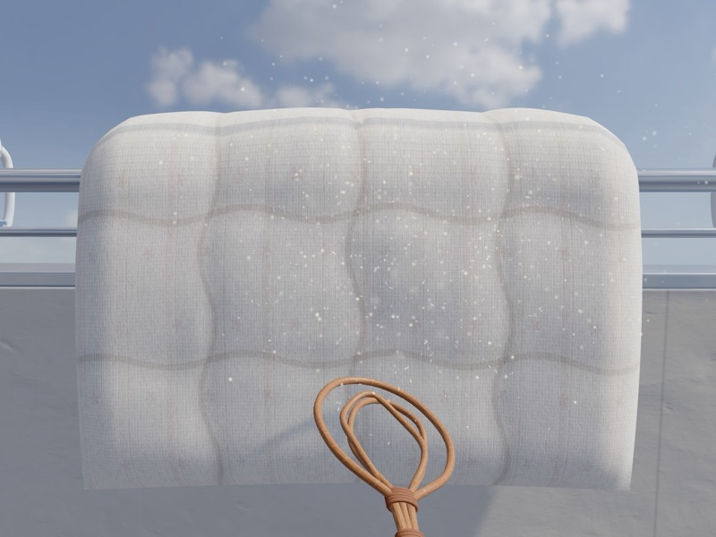
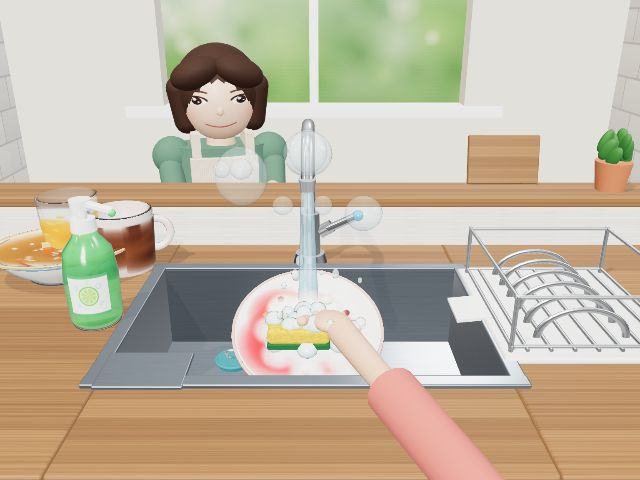
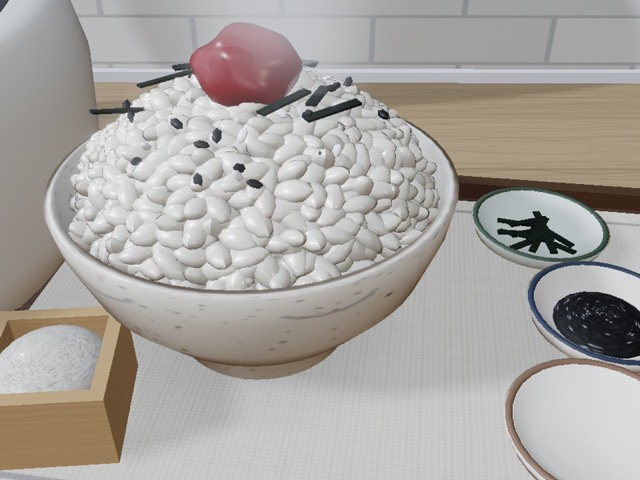

261122a10本
261122a10本- パン屋
- お部屋のそうじ
- ミニピザ
- オムライス
- やさいばたけ
- カレーなべ
- アイロンがけ
- クッキー
- 配膳
- 窓ふき

261122b10本- ふとん干し
- ホットケーキ（ピクセル）（Neon / Carbon）
- かき氷（Neon / Carbon）
- 人形の髪
- みそ汁（Neon / Carbon）
- ハンバーグ（Neon / Carbon）

261122c10本- 皿洗い（Neon / Carbon）
- わたしのお弁当
- 洗濯物たたみ
- ミックスジュース
- 卵焼き（Neon / Carbon）
- いちごケーキ
- おにぎり
- スーパー
 261122d11本
261122d11本- うどんやさん
- ごみしゅうしゅうしゃ
- お風呂そうじ
- 親子丼
- うどん
- ホットケーキ（写実）（Neon / Carbon）
- フルーツサンド
- カレーライス
- たこ焼き（Neon / Carbon）

261122e10本- ごはん炊き
- うわばき洗い
- プリン（Neon / Carbon）
- おもち
- お鍋（Neon / Carbon）
- 焼きいも
- お弁当
- 焼きぎょうざ